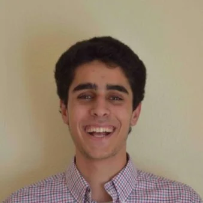

About Arik Singh
Arik Singh is a multidisciplinary designer and engineer driven by a passion for bridging the gap between complex hardware systems and intuitive user experiences. With a diverse background spanning medical devices, industrial design, and systems engineering, he thrives in environments that require both technical precision and creative problem-solving. His approach is rooted in the belief that the most effective solutions emerge from a deep understanding of both the engineering constraints and the user's needs.
His portfolio reflects a journey through various technical landscapes, from developing novel acoustofluidic technologies to optimizing manufacturing processes with custom tracking systems. He has hands-on experience in product design, having worked and specialized in medical device design and engineering for a number of years, where reliability and usability are paramount. Whether building mechatronic systems or streamlining IT procedures, Arik applies a rigor that ensures every project is not just a concept, but a viable, efficient reality.
Beyond the technical specifications, Arik is a maker at heart. He enjoys the challenge of taking an abstract idea and refining it into a tangible product, constantly seeking new opportunities to apply his skills in mechatronics and product development to create meaningful impact.